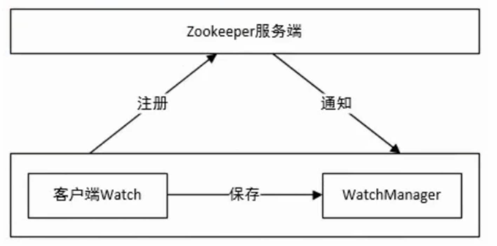

1. 概述
ZooKeeper 是一个开源的分布式协调服务，用于管理大型分布式系统的配置、命名、状态和组成员等。它提供了一组简单且健壮的原语，使得分布式系统中各节点可以协调它们的动作。
2. 设计目标
ZooKeeper 的设计目标可以概括为以下几点：
- 高可用性（High Availability）：ZooKeeper 集群通过冗余实现高可用性，即使部分节点故障，整个系统仍能正常工作。
- 高性能（High Performance）：ZooKeeper 的设计使得它能够处理大量的客户端请求。
- 强一致性（Strong Consistency）：ZooKeeper 保证数据在所有节点之间的一致性，即所有客户端看到的是同一份数据。
3. 数据模型
ZooKeeper 的数据模型类似于文件系统的层次结构，由一系列节点（ZNode）组成。每个 ZNode 都有一个路径唯一标识，例如 /path/to/node。

zookeeper的数据结点可以视为树状结构(或目录)，树中的各个结点被称为znode(即zookeeper node)，一个znode可以由多个子结点。 zookeeper结点在结构上表现为树状；
使用路径path来定位某个znode，比如/ns-1/itcast/mysqml/schemal1/table1，此处ns-1，itcast、mysql、schemal1、table1分别是根结点、2级 结点、3级结点以及4级结点；其中ns-1是itcast的父结点，itcast是ns-1的子结点，itcast是mysql的父结点….以此类推
znode，间距文件和目录两种特点，即像文件一样维护着数据、元信息、ACL、时间戳等数据结构，又像目录一样可以作为路径标识的一部分
3.1 一个znode大体上分为3个部分：
-
结点的数据：即znode data(结点path，结点data)的关系就像是Java map中的 key value关系
-
结点的子结点children
-
结点的状态stat：用来描述当前结点的创建、修改记录，包括cZxid、ctime等
3.2 ZNode 类型
- 持久节点（Persistent Node）：创建后一直存在，直到被显式删除。（宕机仍存在）
- 临时节点（Ephemeral Node）：与客户端会话绑定，客户端断开连接时自动删除。（宕机或timeout时丢失）
- 顺序节点（Sequential Node）：在创建时自动在节点名后追加一个递增的序号。
- 持久顺序节点（Persistent Sequential Node） 和 临时顺序节点（Ephemeral Sequential Node）：结合了持久/临时和顺序节点的特性。
3.3 数据版本
ZooKeeper 为每个 ZNode 维护了三个版本号：
- 数据版本（dataVersion）：每次数据变更时递增。
- ACL 版本（aclVersion）：每次 ACL 变更时递增。
- 状态版本（czxid 版本）：每次节点创建或删除时递增。
4. 典型应用场景
- 配置管理：集中管理分布式系统的配置信息。
- 命名服务：为分布式系统中的服务提供统一的命名和发现机制。
- 分布式锁：实现分布式环境下的互斥锁。
- 组成员管理：动态管理分布式系统中的节点列表。
- 协调和通知：节点之间通过 ZooKeeper 进行协调和通知。
5. 内部机制
5.1 客户端与服务器架构
ZooKeeper 集群由多个服务器组成，每个服务器可以接受客户端的连接。客户端通过连接到任一服务器来访问 ZooKeeper 服务。客户端与服务器之间采用 TCP 连接，并且客户端会维护与服务器的心跳检测。
5.2.1 集群角色
- Leader：负责处理客户端请求，进行投票决策，维护集群状态。
- Follower：跟随 Leader，接收 Leader 的指令，处理客户端请求（仅读请求）。
- Observer：类似于 Follower，但不参与投票，仅用于扩展读能力。
5.2.2 集群角色
- myid：每个 ZooKeeper 服务器都有一个唯一的
myid，用于标识自己。 - zxid（ZooKeeper Transaction ID）：事务 ID，表示服务器上最后一次提交的事务。
- epoch：逻辑时钟，用于区分不同的选举轮次。
5.3 Leader 选举
通过一种称为 Zab（ZooKeeper Atomic Broadcast）协议 的算法来实现的。Zab 协议是 ZooKeeper 的核心协议，用于保证分布式系统的一致性和可靠性。Leader 选举是 Zab 协议的重要组成部分，确保在集群中选出一个唯一的 Leader 来处理所有写请求。
ZooKeeper 的 Leader 选举分为两个阶段：
- 发现阶段（Discovery Phase）：节点之间交换信息，确定当前的集群状态。
- 同步阶段（Synchronization Phase）：Leader 将最新的数据同步给其他节点。
5.3.1 选举触发条件
- 集群启动时，所有节点都处于 LOOKING 状态，开始选举。
- 当 Leader 宕机或失去连接时，Follower 会重新进入 LOOKING 状态，触发选举。
5.3.2 选举规则
每个节点在选举时会投票给自己或其他节点，投票的依据是：
- 优先比较 zxid：zxid 最大的节点优先成为 Leader。
- 如果 zxid 相同，则比较 myid：myid 最大的节点优先成为 Leader。
5.3.3 选举流程
- 初始化状态：
- 所有节点启动时，初始状态为 LOOKING。
- 每个节点投票给自己，投票信息包括：
(myid, zxid, epoch)。
- 交换投票信息：
- 节点之间通过 TCP 连接交换投票信息。
- 每个节点将自己的投票信息发送给其他节点。
- 处理投票：
- 每个节点收到其他节点的投票信息后，会进行比较：
- 如果收到的投票比自己的投票更优（zxid 更大，或者 zxid 相同但 myid 更大），则更新自己的投票。
- 否则，保持自己的投票不变。
- 每个节点收到其他节点的投票信息后，会进行比较：
- 统计投票：
- 每个节点统计收到的投票信息，如果某个节点获得了 大多数（Quorum） 的投票（即超过半数节点的支持），则该节点成为 Leader。
- 其他节点成为 Follower。
- 选举完成：
- 被选为 Leader 的节点状态变为 LEADING。
- 其他节点状态变为 FOLLOWING。
5.3.4 选举的容错机制
- 大多数原则（Quorum）：
- ZooKeeper 使用“大多数原则”来保证选举的正确性。只有获得大多数节点支持的节点才能成为 Leader。
- 例如，在一个 5 节点的集群中，至少需要 3 个节点同意才能选出 Leader。
- 防止脑裂（Split-Brain）：
- 通过大多数原则，ZooKeeper 可以防止网络分区导致的脑裂问题。如果集群被分割为多个部分，只有包含大多数节点的部分才能选出 Leader。
- 恢复机制：
- 如果 Leader 宕机，Follower 会重新触发选举，选出新的 Leader。
- 新 Leader 会通过 Zab 协议将最新的数据同步给其他节点，确保数据一致性。
5.4 数据同步
ZooKeeper 采用基于主从复制的同步机制。Leader 负责将数据变更日志（事务日志）发送给 Follower，Follower 按照相同的顺序应用日志，保证数据一致性。
5.5 Watch 机制
ZooKeeper 提供了一种 Watch 机制，允许客户端在某个 ZNode 上注册Watcher。当 ZNode 的状态发生变化时，ZooKeeper 会向注册的客户端发送通知。
watcher概念
- zookeeper提供了数据的 发布/订阅 功能，多个订阅者可同时监听某一特定主题对象，当该主题对象的自身状态发生变化时例如节点内容 改变、节点下的子节点列表改变等，会实时、主动通知所有订阅者
- zookeeper采用了 Watcher机制实现数据的发布订阅功能。该机制在被订阅对象发生变化时会异步通知客户端，因此客户端不必在 Watcher注册后轮询阻塞，从而减轻了客户端压力
- watcher机制事件上与观察者模式类似，也可看作是一种观察者模式在分布式场景下的实现方式
watcher架构
watcher实现由三个部分组成
- zookeeper服务端
- zookeeper客户端
- 客户端的ZKWatchManager对象
客户端首先将 Watcher注册到服务端，同时将 Watcher对象保存到客户端的watch管理器中。当Zookeeper服务端监听的数据状态发生变化时， 服务端会主动通知客户端，接着客户端的 Watch管理器会触发相关 Watcher来回调相应处理逻辑，从而完成整体的数据 发布/订阅 流程。
6. 一致性保障
ZooKeeper 通过以下机制保证数据一致性：
- 原子性：所有操作要么全部成功，要么全部失败。
- 顺序一致性：来自同一客户端的请求按顺序执行。
- 强一致性：所有客户端看到的是同一份数据。
7. 优缺点
优点
- 简单易用：提供简单易用的 API，易于集成到分布式系统中。
- 高可用性：通过冗余节点保证服务的高可用性。
- 强一致性：保证数据在所有节点之间的一致性。
缺点
- 性能受限：虽然性能较高，但仍然存在单点性能瓶颈（Leader 节点）。
- 复杂性：内部机制相对复杂，维护成本较高。
8. 适用场景
ZooKeeper 适用于以下场景：
- 配置管理：集中管理分布式系统的配置信息。
- 命名服务：为分布式系统中的服务提供统一的命名和发现机制。
- 分布式锁和协调：实现分布式环境下的互斥锁和协调机制。
- 集群管理：动态管理集群节点，实现故障转移和负载均衡。
9. 总结
ZooKeeper 是一个功能强大且广泛应用的分布式协调服务，适用于各种分布式系统的协调和管理。其简单易用的 API 和强大的一致性保证，使得它成为构建分布式系统的重要组件。然而，理解和正确使用 ZooKeeper 也需要一定的知识和经验，特别是在处理一致性、性能和高可用性方面。
watch机制demo
下面是一个使用 ZooKeeper Watch 机制的简单示例。这个示例展示了如何使用 Java 客户端连接到 ZooKeeper 服务器，并在一个节点上设置 Watcher，当节点数据发生变化时，客户端会收到通知。
|
|
运行结果
|
|
代码说明
- ZooKeeper 连接：
- 使用
ZooKeeper类连接到 ZooKeeper 服务器。 - 通过
CountDownLatch确保连接建立后再执行后续操作。
- 使用
- 创建节点：
- 使用
zooKeeper.create()方法创建一个持久节点/testWatchNode，并设置初始数据。
- 使用
- 设置 Watcher：
- 使用
zooKeeper.getData()方法获取节点数据，并设置一个 Watcher。 - 当节点数据发生变化时，Watcher 的
process()方法会被调用，打印变化信息，并重新设置 Watcher。
- 使用
- 模拟节点数据变化：
- 使用
zooKeeper.setData()方法更新节点数据，触发 Watcher。
- 使用
- 保持程序运行：
- 使用
Thread.sleep()保持程序运行，以便观察 Watcher 触发。
- 使用
- 关闭连接：
- 使用
zooKeeper.close()方法关闭 ZooKeeper 连接。
- 使用